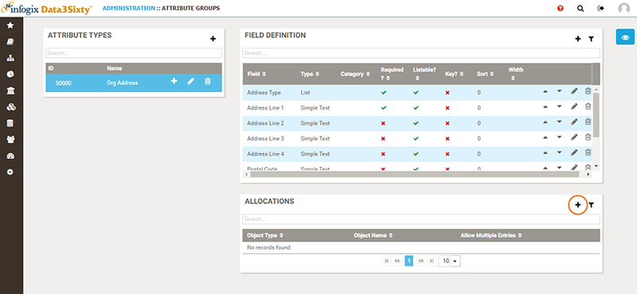

Attributes provide metadata enrichment within Infogix Data3Sixty. They act as containers that can hold multiple fields describing the objects that are assigned to them. They can be assigned to many different types of objects, including artifacts such as a business terms and applications, or alternatively they can be applied to various taxonomies, relationships, fusions and data domains.
You can access the Attribute page by clicking the Administration icon on the left of the screen and selecting Attributes.
Once the fields have been created, an Attribute needs to be allocated to the metadata that they describe. This can include single Artifact Types, Models, Fusion, etc. or it can be a Relationship, such as "All Business Terms associated with the Investments Model".
You can add a new attribute allocation as follows:

[TODO: Add an example here]